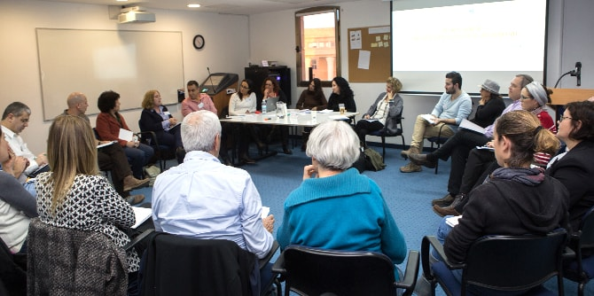
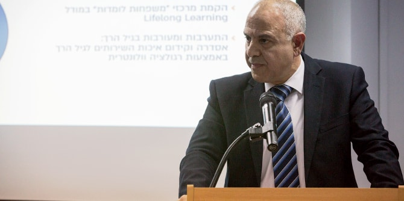

"התרגיל הקבוצתי מהווה חוליה מרכזית בתוכנית הלימודים כאן, חוליה שעניינה מפגש והתמודדות עם סוגיה אמתית משדה החינוך שמעסיקה את המערכת", אמר דני בר גיורא, מנהל בית ספר מנדל למנהיגות חינוכית. "אני מלא הערכה להתמודדות שלכם, עמיתי מחזור כ"ה, עם האתגר הזה, על תהליך הלימוד וההתגייסות שלכם לנושא".
"התרגיל הקבוצתי הוא עדות לקשר המקצועי הארוך והעמוק שיש לנו עם משרד החינוך", אמר
נשיא קרן מנדל,
פרופ' יהודה ריינהרץ. "מדי שנה, נושא תרגיל הקבוצתי נבחר על-ידי הנהלת המשרד, וכך העמיתים מרוויחים אפשרות ללמוד ולהבין לעומק סוגיה שנמצאת על שולחן קברניטי המערכת, וגם תורמים למערכת בחזרה, על-ידי הגשת מסמך סיכום, הכולל גם המלצות לפעולה", אמר.
במסגרת התרגיל שקדו 21 עמיתי מחזור כ"ה במשך שלושה שבועות על סוגיית הפערים בחינוך בישראל. את תוצרי התרגיל הציגו באירוע שנערך ב-29 בינואר בבית ספר מנדל למנהיגות חינוכית: המסמך המסכם של העמיתים, המבוסס על מחקרים נרחבים בכל אחד מן התחומים הנדרשים, מציג שלושה מנופים שהתגבשו במהלך פרק זמן התרגיל, ואשר עשויים לתרום תרומה ניכרת לצמצום הפערים במערכת החינוך בישראל.

המנוף הראשון מבקש לשפר את איכות ההוראה בבתי ספר מוחלשים באמצעות הגדרת ההוראה בבתי ספר אלו כמומחיות ייחודית, הדורשת הכשרה ייעודית. הכשרת המורים כמומחיות תכלול שלושה תחומים, נוסף על תחום הדעת של המורה: התחום הרגשי, שבו נדרשת למידת מיומנויות של אמפתיה והכלה, התחום החברתי – ראיית התלמיד בתוך ההקשר החברתי, התרבותי והמשפחתי שלו, והתחום הפדגוגי – שימוש בפדגוגיה ביקורתית תוך רגישות לתכנים רלוונטיים ושימוש במיומנויות הוראה פרטנית, הוראה מתקנת והתמודדות עם לקויות למידה.
המנוף השני ממליץ להקים מרכזי "משפחות לומדות" אשר יציעו מגוון של תכנים מותאמים להורים ולילדים, שיתמקדו בפיתוח ההורה כאדם לומד ומתפתח בכדי לקדם את השכלת ההורים ואת מעורבותם בחינוך ילדיהם.
הצעד המוצע השלישי הוא
מינוף הקמת המועצה לגיל הרך
לכדי גוף משמעותי ויישומי. המלצה זו מדגישה את חשיבותו של הגיל הרך כתקופה הקריטית להתפתחות הילד מגיל לידה ועד גיל שלוש שנים. על-פי ההמלצה, מנגנון בין-תחומי זה יסדיר את כל הפתרונות והמענים הרלוונטיים לקבוצת גיל זו.

מנכ"ל משרד החינוך, מר שמואל אבואב, הגיב על הצגת התרגיל: "שלושת הדברים שהצעתם כאן הם שלושה מרכיבים שיש להם ערך וטעם ומשמעות, מדוע? משום שהקשר בין מורה לתלמיד, האמונה, היכולת להטמיע בתלמידים את הדרך להישגים, תלויים באינטראקציה, בסופו של דבר, בין מורה לתלמיד. הדבר השני שהצעתם, בתבונה רבה, הוא המרכיב המשפחתי. כל המחקרים מצביעים על כך שהמשפחה היא הזירה שמכוונת להישגים אקדמיים, למוטיבציה, ולתמיכה בתלמיד במשימה הלימודית ההתפתחותית שלו. והצעתכם השלישית, להתחיל את הכול בגיל הרך – אין דבר יותר נכון מזה", אמר.
{kind=link}
{kind=link}